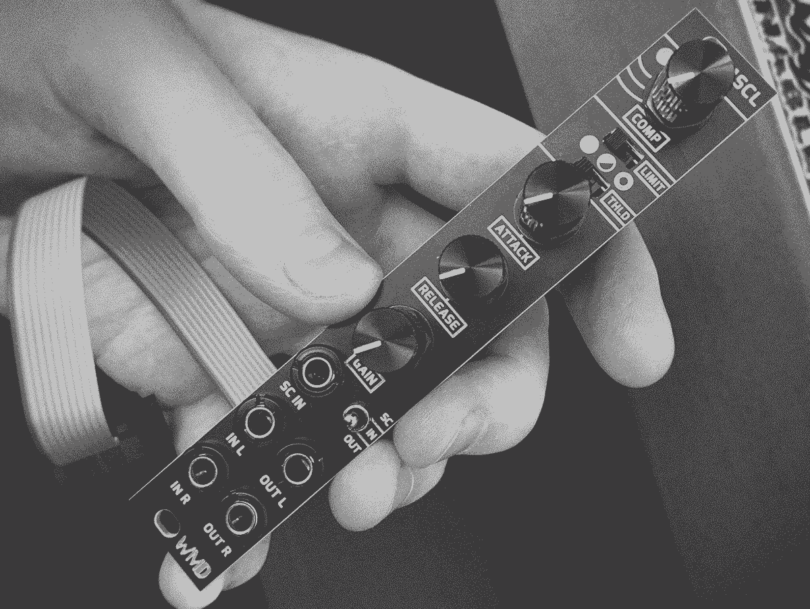

Black Hardware Review
29/05/2022
So you’ve got all black panels- maybe had to paint a couple of panels or order custom ones- guess you’re done, right? Wrong! There’s more. If you’re someone that isn’t even bothered about having black panels, then you’ll probably think the below is ridiculous. In case anyone does think like me and gets enjoyment from the most subtle improvements, below is a list of extra things to customise your modules.
Black Bananuts - these are awesome, they look great and are a nice customisation to make a module feel more your own, especially in combination with other things listed below. They can make even the most boring utilities look pretty sharp.
Black Cosmonuts - these are newer and a little cheaper than bananuts and also look great. Slightly smaller/lower profile than Bananuts and arguably a bit easier to install. The difference isn't hugely noticeable from a distance so I think I can live with a bit of both in my system, though obviously not mixing the two on the same module, that would be insane.
Black Pot Nuts and washers - these are also quite a subtle improvement but they do look really really nice.
Noise Engineering knobs - expensive to ship to the UK but super awesome. These are only available as a D-shaft so I'd recommend checking the type of pot on your module before ordering replacement knobs.

Black aluminium knobs - Serpens Modular-style, for knurled-shaft pots, these just look cool and are nice to use. They seem a bit harder to search for because they don't have a special name for them (as far as I know).
Erica Synths knobs - for smooth-shaft pots. These along with the two styles mentioned above make up the unholy trinity as far as I'm concerned, they're just the best.
Tall Trimmer Toppers - these go on top of the tiny knobs that you get on 2hp/pico modules or often as CV attenuators on modules. Admittedly in black these aren’t that exciting and don’t make a life-changing difference visually but it does make micro-knobs a little easier to use, definitely worth trying these out.
Slider and switch caps - these are just nice, nicer grippier texture for your switches.
Clear Control Eurorack Cable Clips - wasn’t sure about these at first- I kinda like cable spaghetti and worry about getting into a habit of leaving things patched in one configuration and discouraging experimentation BUT I picked up a pack to see what they’re like and just installed a couple and they are pretty handy. Good for keeping cables tidy if you want to close the lid on your case and work especially nicely with right-angled Tendrils. Also good if you have a gig coming up and want things to be a bit tidier than usual. I mainly use these for things I know are going to stay patched like sending things to the mixer.
Black nylon 6mm M3 screws - been using these since I started, they’re super cheap & don’t scratch your panels, takes less energy to screw in which is good if you're like me and rearrange your whole rack on a semi-regular basis. Available from loads of places.
Honourable Mentions:
Befaco Bananuts Pot Nuts - an alternative to the hex pot nuts/washers mentioned above.Look great but I haven’t tried them out yet
Befaco Knurlies - I haven’t been fully converted as they stick out a bit but a lot of people swear by them. I've got a few in a mini case and do see the appeal though.
Bastl Aluminium Knobs - haven’t got any of these yet but they look awesome, similar style to the Noise Engineering ones and available in the UK which is a bonus.
If i've missed anything out anything cool, please get in touch and let me know!